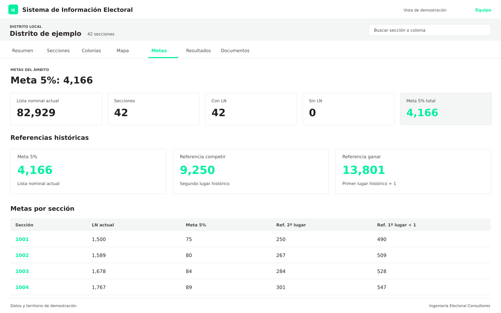
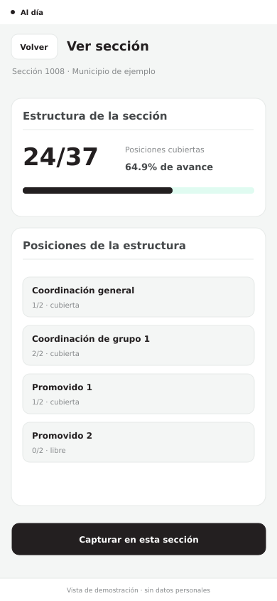

01. Minería de datos e inteligencia electoral
Conocer el territorio para darle fundamento a la estrategia.
Una base histórica responde preguntas distintas a un reporte de campo o a una incidencia durante la jornada electoral. Por eso organizamos nuestras soluciones en tres áreas, con módulos que pueden configurarse de acuerdo con el territorio, la estructura y las necesidades de cada proyecto.
Aquí explicamos qué hace cada solución, cómo se utiliza y qué información ofrece para trabajar.

Conocer el territorio para darle fundamento a la estrategia.

Dar dirección, continuidad y seguimiento al trabajo de campo.

Preparar la estructura que cuidará el voto durante la jornada electoral.
Las pantallas son vistas de demostración de nuestros sistemas.
Trabajamos sobre tres áreas que se complementan: minería de datos e inteligencia electoral, operación territorial y defensa del voto.
Conocer el territorio para darle fundamento a la estrategia.
Realizamos estudios minuciosos para comprender la evolución electoral de una entidad, municipio, distrito, región, microrregión o sección. Analizamos resultados históricos, participación ciudadana, lista nominal, márgenes de competencia y variaciones entre procesos electorales.
Nuestros estudios permiten examinar dónde ha crecido o disminuido una fuerza política, cómo se distribuye la votación y qué diferencias existen entre elecciones y ámbitos territoriales. A partir de esa información construimos diagnósticos, escenarios y metas de trabajo con supuestos que pueden revisarse y actualizarse.
Geografía e inteligencia electoral. Elaboramos mapas temáticos y análisis territoriales para facilitar la lectura de los resultados. Estudiamos redistritaciones y reseccionamientos, así como sus efectos sobre la organización electoral y la comparación entre periodos. Cuando cambian las delimitaciones, construimos correspondencias que permiten estudiar su evolución considerando las posibilidades y limitaciones de los datos disponibles.
Metas y seguimiento. Desarrollamos escenarios de participación y votación, desagregamos objetivos por territorio y establecemos indicadores para evaluar avances. Los semáforos y matrices de seguimiento permiten identificar rezagos, revisar prioridades y orientar la planeación.
Información disponible para trabajar. Transformamos los estudios en productos de consulta: dashboards, mapas interactivos, reportes ejecutivos y sistemas como nuestra Central de Información Electoral. Estas herramientas reúnen información histórica, territorial y operativa para consultar el panorama general de un proyecto y profundizar en sus componentes.
Dar dirección, continuidad y seguimiento al trabajo de campo.
Diseñamos estrategias para organizar la presencia territorial de un proyecto electoral. Definimos zonas de trabajo, recorridos, rutas, responsabilidades y mecanismos de coordinación a partir del diagnóstico y de la capacidad real de los equipos.
Acompañamos la construcción de estructuras y la formación de coordinadores, operadores y promotores. La preparación comprende el conocimiento del proyecto, las responsabilidades de cada función, los procedimientos de trabajo y el uso de las herramientas de captura. Buscamos que los equipos puedan sostener una operación ordenada y comprender el propósito de sus actividades.
Sistemas para el trabajo diario. Hemos desarrollado una plataforma integral que permite registrar actividades, consultar cobertura, documentar incidencias y supervisar avances. La información capturada en campo alimenta los tableros de seguimiento conforme se recibe, facilitando la coordinación entre responsables territoriales y centros de operación.
Captura con y sin conexión. Incorporamos formularios digitales, reconocimiento óptico de caracteres —OCR— y mecanismos de validación que reducen tareas manuales y ayudan a mantener registros consistentes. Las herramientas de operación sin internet permiten continuar la captura y sincronizar la información cuando se recupera la conexión.
Organización de la información. Implementamos CRM y bases de trabajo para administrar equipos, contactos operativos, actividades y compromisos. Los historiales, controles de duplicados y permisos de acceso facilitan la continuidad del trabajo y la consulta de información por las personas responsables.
El seguimiento diario permite contrastar lo programado con lo realizado, reconocer necesidades de apoyo y ajustar la operación a partir de lo que ocurre en el territorio.
Preparar la estructura que cuidará el voto durante la jornada electoral.
Construimos equipos y sistemas para organizar la representación electoral desde su integración hasta el seguimiento del día de la elección. Articulamos cobertura, registro, capacitación, rutas y comunicación para que cada representante conozca su responsabilidad y tenga acceso al apoyo que necesita.
Integración y registro. Desarrollamos herramientas para capturar y organizar la información de representantes generales —RG— y representantes ante mesas directivas de casilla —RC—. Facilitamos la preparación y revisión de los datos necesarios para gestionar sus registros ante las plataformas oficiales del INE, así como el seguimiento de expedientes y espacios pendientes.
Planeación de rutas y cobertura. Organizamos la distribución de representantes y diseñamos rutas para los RG considerando ubicación de casillas, distancias, tiempos de traslado y necesidades de atención. Establecemos canales de comunicación y responsabilidades para coordinar la operación.
Capacitación práctica. Desarrollamos herramientas y contenidos para preparar a los representantes en las distintas etapas de la jornada: instalación de casillas, votación, identificación de incidencias, escrutinio y cómputo, y documentación de resultados. La formación se enfoca en comprender sus atribuciones y actuar dentro de sus funciones.
Seguimiento de la jornada. Nuestros sistemas permiten reportar presencia, registrar incidencias, solicitar apoyo y recopilar actas y documentación electoral. La recepción organizada de estos reportes facilita conocer el estado de la cobertura y atender las necesidades de la estructura.
Precisamos el territorio, las personas usuarias, los módulos necesarios, las fuentes disponibles y los productos que se requieren. También establecemos qué información se consultará y qué actividades se registrarán.
Revisamos bases, catálogos y documentos. Se identifican faltantes, inconsistencias y criterios que deben resolverse antes de utilizarlos en el sistema.
Se organizan territorios, formularios, funciones, permisos, indicadores y reportes. Cada perfil recibe las herramientas correspondientes a su responsabilidad.
Se realizan ejercicios con los flujos de trabajo previstos: captura, revisión, consulta y seguimiento. Esta etapa permite corregir dificultades y preparar a las personas que utilizarán la solución.
El sistema comienza a utilizarse con los procedimientos acordados. El seguimiento permite identificar necesidades de ajuste en formularios, consultas o mecanismos de coordinación.
Se revisan los resultados frente a los objetivos del proyecto y se preparan los productos de cierre definidos: bases, reportes, documentación y hallazgos para el trabajo posterior.
Desarrollamos nuestras herramientas a partir de las necesidades de la operación electoral. Incorporamos automatización e inteligencia artificial en tareas de extracción, clasificación y consulta de información, con mecanismos de revisión que permitan detectar y corregir errores.
Nuestros sistemas se alojan en infraestructura de servidores fuera de México. Su resguardo se acompaña de controles de acceso, permisos por función y procedimientos para la captura, consulta y uso autorizado de los datos. La protección de la información forma parte del diseño tecnológico y de la preparación de quienes utilizan las plataformas.
Los permisos se organizan por función y ámbito territorial. Esto permite definir quién puede capturar, consultar, revisar o administrar información en cada módulo.
Nuestros sistemas se alojan en infraestructura de servidores fuera de México. El resguardo se acompaña de controles de acceso y procedimientos para el uso autorizado de la información; la ubicación del servidor es uno de los componentes de esa configuración.
Desde el inicio del proyecto se definen las responsabilidades sobre los datos, sus finalidades de uso y las condiciones de conservación y entrega. Estos criterios forman parte de la operación cotidiana de las herramientas.
Cuéntanos qué necesitas resolver en información electoral, operación territorial o defensa del voto.